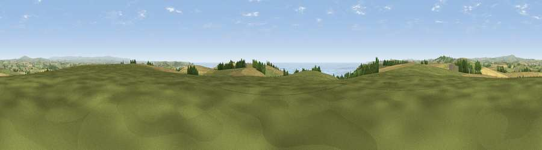

Narkurs Hill
#4083 in England · top 7% of its area beats it · near DownderryThe view, rendered

A 360° render of this exact spot computed from the terrain model, tree cover and land cover — summer colours, afternoon light, calibrated against photographs of famous viewpoints. Real trees, hedges and buildings will differ in detail.
The panorama
Grey silhouette: terrain skyline in each direction (720 bearings, Earth curvature and refraction included). Dashed green: skyline with trees (+15 m) and buildings (+8 m) as obstacles. Blue strip: how far the ground is visible on each bearing.
Where the view opens
Wedge length = distance to the farthest visible ground on that bearing (vegetation-aware). Rings at 10, 25 and 50 km.
What fills the view
50% grassland · 28% cropland · 15% water · 6% woodland · 1% built-up
Angular shares of the visible panorama (visual magnitude), not map area. Landscape diversity 0.53 (0–1 Shannon).
Key numbers
More beautiful places nearby
The staircase of upgrades: each row has a higher view potential than everything closer. Driving times are estimates from straight-line distance, calibrated against real road routing — check an actual route before setting out.
| Place | Direction | Drive | Score |
|---|---|---|---|
| Viewpoint near Downderry | W · 1 km | ~2 min | 72.6 |
| Viewpoint near Seaton | W · 2 km | ~5 min | 74.0 |
| Viewpoint near Downderry | SE · 2 km | ~5 min | 83.5 |
| Viewpoint near Polperro | WSW · 14 km | ~26 min | 83.7 |
| Pencarrow Head | WSW · 18 km | ~31 min | 86.0 |
| Viewpoint near Stenalees | W · 33 km | ~50 min | 88.0 |
| Viewpoint near Crackington Haven | NNW · 43 km | ~63 min | 88.1 |
| Viewpoint near Combe Martin | NNE · 96 km | ~121 min | 88.9 |
50.37477, -4.35361 · source: dobih hill · position refined by local search. Computed location — check access rights before visiting.